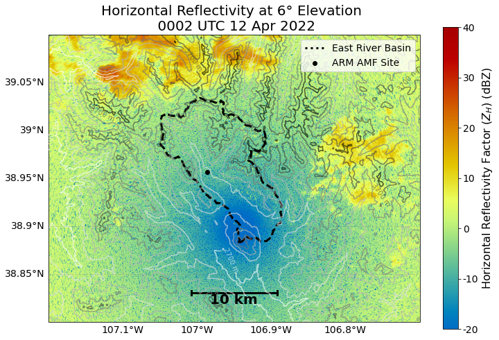
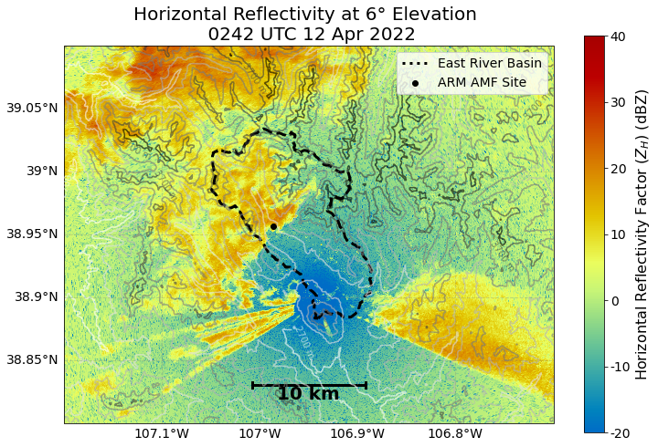
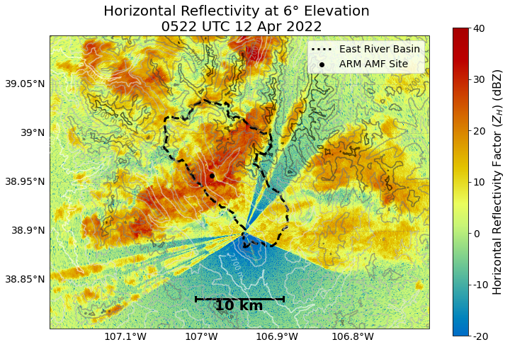
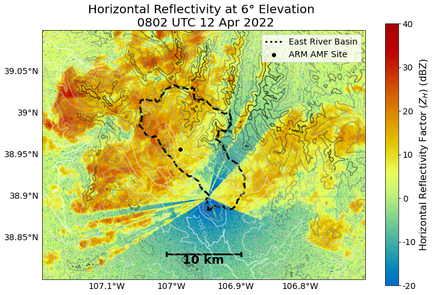
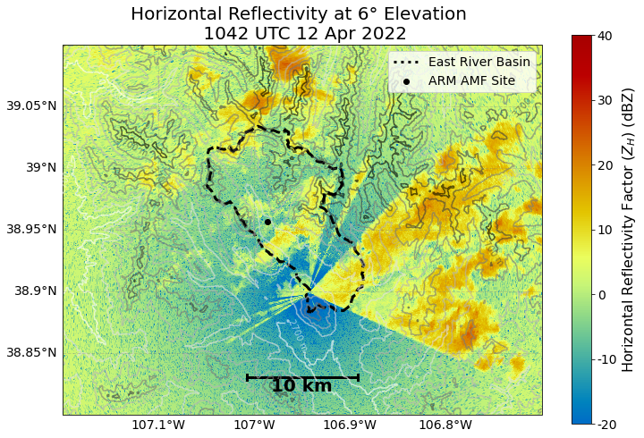
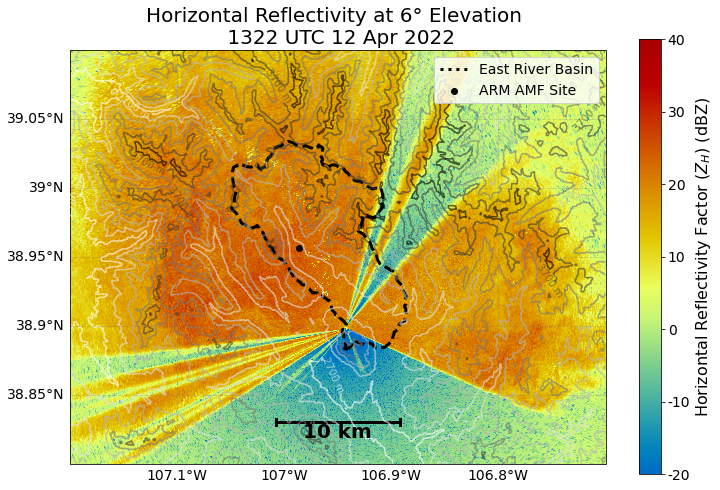
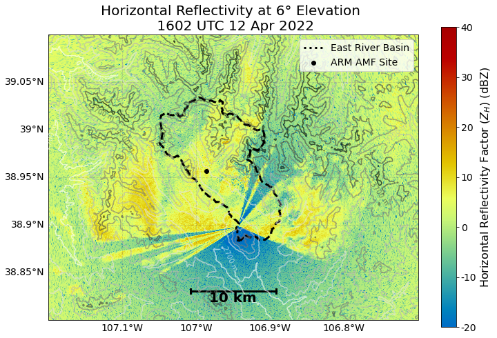
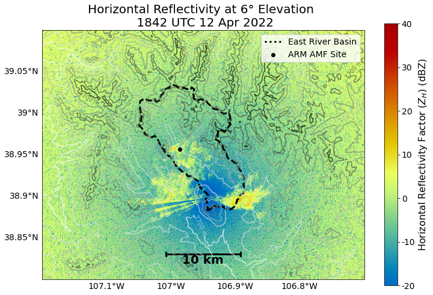
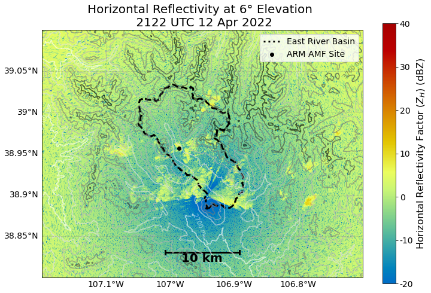

Plot PPI data for BAMS Paper
Contents
Plot PPI data for BAMS Paper#
Plot maps for the SAIL Bulletin of the American Meteorological Society (BAMS) submission.
Imports#
import glob
import os
import datetime
import warnings
import numpy as np
import matplotlib.pyplot as plt
import pyart
import xarray as xr
import cartopy.crs as ccrs
import cartopy.feature as cfeature
from matplotlib.dates import DateFormatter
import pandas as pd
import geopandas as gpd
from metpy.plots import USCOUNTIES
from matplotlib.colors import ListedColormap
from datetime import datetime
import act
import fiona
from podpac.datalib.terraintiles import TerrainTiles
from podpac import Coordinates, clinspace
import hvplot as hv
import hvplot.xarray
import numpy as np
from math import atan2 as atan2
from matplotlib import colors
from matplotlib import ticker, cm
fiona.drvsupport.supported_drivers['lib?kml'] = 'rw' # enable KML support which is disabled by default
fiona.drvsupport.supported_drivers['LIBKML'] = 'rw' # enable KML support which is disabled by default
warnings.filterwarnings('ignore')
Read the Watershed and Instrumentation Locations#
east_river = gpd.read_file('data/site-locations/East_River.kml')
splash_locations = gpd.read_file('data/site-locations/SPLASH_Instruments.kml')
amf_sensor_locations = gpd.read_file('data/site-locations/SAIL_Instruments.kml')
Retrieve the DEM Data#
min_lat = 38.8
max_lat = 39.1
min_lon = -107.2
max_lon = -106.7
# create terrain tiles node
node = TerrainTiles(tile_format='geotiff', zoom=10)
# create coordinates to get tiles
c = Coordinates([clinspace(min_lat, max_lat, 1000), clinspace(min_lon, max_lon, 1000)], dims=['lat', 'lon'])
# evaluate node
terrain = node.eval(c)
Setup Helper Functions#
We need these helper functions to create the scale bar within our figure
def gc_latlon_bear_dist(lat1, lon1, bear, dist):
"""
Input lat1/lon1 as decimal degrees, as well as bearing and distance from
the coordinate. Returns lat2/lon2 of final destination. Cannot be
vectorized due to atan2.
"""
re = 6371.1 # km
lat1r = np.deg2rad(lat1)
lon1r = np.deg2rad(lon1)
bearr = np.deg2rad(bear)
lat2r = np.arcsin((np.sin(lat1r) * np.cos(dist/re)) +
(np.cos(lat1r) * np.sin(dist/re) * np.cos(bearr)))
lon2r = lon1r + atan2(np.sin(bearr) * np.sin(dist/re) *
np.cos(lat1r), np.cos(dist/re) - np.sin(lat1r) *
np.sin(lat2r))
return np.rad2deg(lat2r), np.rad2deg(lon2r)
def add_scale_line(scale, ax, projection, color='k',
linewidth=None, fontsize=None, fontweight=None):
"""
Adds a line that shows the map scale in km. The line will automatically
scale based on zoom level of the map. Works with cartopy.
Parameters
----------
scale : scalar
Length of line to draw, in km.
ax : matplotlib.pyplot.Axes instance
Axes instance to draw line on. It is assumed that this was created
with a map projection.
projection : cartopy.crs projection
Cartopy projection being used in the plot.
Other Parameters
----------------
color : str
Color of line and text to draw. Default is black.
"""
frac_lat = 0.1 # distance fraction from bottom of plot
frac_lon = 0.5 # distance fraction from left of plot
e1 = ax.get_extent()
center_lon = e1[0] + frac_lon * (e1[1] - e1[0])
center_lat = e1[2] + frac_lat * (e1[3] - e1[2])
# Main line
lat1, lon1 = gc_latlon_bear_dist(
center_lat, center_lon, -90, scale / 2.0) # left point
lat2, lon2 = gc_latlon_bear_dist(
center_lat, center_lon, 90, scale / 2.0) # right point
if lon1 <= e1[0] or lon2 >= e1[1]:
warnings.warn('Scale line longer than extent of plot! ' +
'Try shortening for best effect.')
ax.plot([lon1, lon2], [lat1, lat2], linestyle='-',
color=color, transform=projection,
linewidth=linewidth)
# Draw a vertical hash on the left edge
lat1a, lon1a = gc_latlon_bear_dist(
lat1, lon1, 180, frac_lon * scale / 20.0) # bottom left hash
lat1b, lon1b = gc_latlon_bear_dist(
lat1, lon1, 0, frac_lon * scale / 20.0) # top left hash
ax.plot([lon1a, lon1b], [lat1a, lat1b], linestyle='-',
color=color, transform=projection, linewidth=linewidth)
# Draw a vertical hash on the right edge
lat2a, lon2a = gc_latlon_bear_dist(
lat2, lon2, 180, frac_lon * scale / 20.0) # bottom right hash
lat2b, lon2b = gc_latlon_bear_dist(
lat2, lon2, 0, frac_lon * scale / 20.0) # top right hash
ax.plot([lon2a, lon2b], [lat2a, lat2b], linestyle='-',
color=color, transform=projection, linewidth=linewidth)
# Draw scale label
ax.text(center_lon, center_lat - frac_lat * (e1[3] - e1[2]) / 4.0,
str(int(scale)) + ' km', horizontalalignment='center',
verticalalignment='center', color=color, fontweight=fontweight,
fontsize=fontsize)
Plot the Reflectivity with the Pluvio Sensor and Watershed Locations#
def plot_reflectivity_sail(file, out_directory='.'):
"""
Reads and plots data from the SAIL field campaign
"""
radar = pyart.io.read(file)
elevation_contours = np.arange(2_700, 4_200, 250)
fig = plt.figure(figsize=(12,8))
ax = plt.subplot(111,
projection=ccrs.PlateCarree())
#Setup a RadarMapDisplay, which gives our axes in lat/lon
display = pyart.graph.RadarMapDisplay(radar)
# Add our reflectivity (DBZ) field to the plot, including our gatefilter
radar_plot = display.plot_ppi_map('DBZ',
3,
ax=ax,
vmin=-20,
min_lat=min_lat,
max_lat=max_lat,
min_lon=min_lon,
max_lon=max_lon,
embelish=False,
colorbar_label="Horizontal Reflectivity Factor ($Z_{H}$) \n (dBZ)",
vmax=40.,)
cbar = display.cbs[0]
cbar.set_ticklabels(np.arange(-20, 50, 10), fontsize=14)
cbar.set_label(label='Horizontal Reflectivity Factor ($Z_{H}$) (dBZ)', fontsize=16)
display.cbs = [cbar]
east_river.plot(ax=ax,
linewidth=3,
edgecolor='k',
facecolor="None",
linestyle='--',)
ax.plot(0,
0,
color='k',
linestyle=':',
linewidth=3,
label='East River Basin')
amf_sensor_locations.loc[amf_sensor_locations.Name == 'PLUVIO'].plot(ax=ax,
color='k',
label='ARM AMF Site')
plt.legend(loc='upper right',
fontsize=14)
plt.xlim(min_lon, max_lon)
plt.ylim(min_lat, max_lat)
# Add our scale bar
add_scale_line(10.0, ax, projection=ccrs.PlateCarree(),
color='black', linewidth=3,
fontsize=20,
fontweight='bold')
# Add gridlines
gl = ax.gridlines(crs=ccrs.PlateCarree(),
draw_labels=True,
linewidth=1,
color='gray',
alpha=0.3,
linestyle='--')
plt.gca().xaxis.set_major_locator(plt.NullLocator())
# Make sure labels are only plotted on the left and bottom
gl.xlabels_top = False
gl.ylabels_right = False
gl.xlabel_style = {'size': 14}
gl.ylabel_style = {'size': 14}
third_sweep = radar.extract_sweeps([2])
time = pd.to_datetime(third_sweep.time["data"], unit='s').mean()
time_in_label = time.strftime("%H%M UTC %d %b %Y")
time_in_file = time.strftime("%B_%d_%H%M").lower()
contours = terrain.to_dataset(name='DEM').DEM.plot.contour(levels=elevation_contours, cmap='Greys', alpha=0.6)
ax.clabel(contours, elevation_contours[::2], fontsize=10, inline=1, fmt='%i m', rightside_up=True)
#cbar_elevation.set_ticklabels(np.arange(2_000, 5_000, 750), fontsize=14)
#cbar_elevation.set_label(label='Elevation (meters)', fontsize=16)
plt.title(f"Horizontal Reflectivity at 6° Elevation \n {time_in_label}", fontsize=20)
plt.savefig(f"{out_directory}/ppi_4deg_{time_in_file}.png", dpi=300, bbox_inches="tight")
plt.show()
hour = '12'
file_list = sorted(glob.glob(f"/gpfs/wolf/atm124/proj-shared/gucxprecipradarS2.00/glue_files/202204_glued/xprecipradar_guc_volume_20220412-*"))
for file in file_list[::30]:
plot_reflectivity_sail(file, out_directory='ppi_animation_april14')









import glob
ppi_images = sorted(glob.glob("ppi_animation_april14/*"))
import imageio.v2 as imageio
with imageio.get_writer('april-ref-ppi-animation-6deg.gif', mode='I') as writer:
for filename in ppi_images:
image = imageio.imread(filename)
writer.append_data(image)